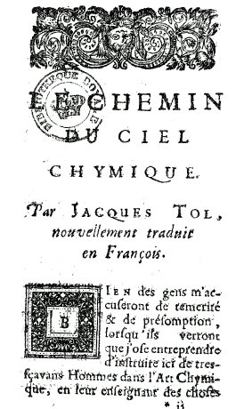

LE CHEMIN DU CIEL CHYMIQUE
par Jacques TOLLIUS1
AMSTERDAM 1688
revu, le 27 juillet 2003

FIGURE I
(1ère page de Chemin du Ciel Chymique)Bien des gens m'accuseront de témérité et de présomption, lorsqu'ils verront que j'ose entreprendre d'instruire ici de très savants hommes dans l'Art Chimique, en leur enseignant des choses qu'ils ont ignorées jusqu'à présent, ou leur faisant remarquer celles qu'ils ont mal entendues : moi, dis-je, qui suis bien éloigné de la parfaite connaissance de cet art.
Mais il m'importe peu quel jugement l'on fasse de moi, pourvu que je puisse être utile au public. Si les Savants trouvent ici quelque chose qui ne soit pas de leur goût, la sincérité avec laquelle j'écris doit bien moins m'attirer indignation, que me servir d'excuse auprès d'eux.
Et certes, soit que l'erreur m'ait aveuglé comme beaucoup d'autres, ou qu'un travail plus certain m'ait conduit à la vérité, il est toujours très assuré que bien des gens auront cet avantage, qu'à l'avenir ils se retireront et des dépenses inutiles, qu'ils font par des travaux infructueux, et de la perte du temps qui leur doit être si précieux et si cher. La méthode que je me suis proposé pour faire un ouvrage si excellent et si beau, est toute différente de celle que les autres ont suivie. Dans ce chemin si glissant et qui conduit tant de personnes au précipice, j'ai pour guide le savant Paracelse [1, 2], et le fameux Basile Valentin [1, 2, 3], encore mille fois plus docte et plus instructif que lui.
J'avais déjà résolu de disposer des vaisseaux ; j'avais commencé la préparation du mercure, suivant la doctrine de Philalèthe, par plusieurs lotions et triturations ; je dissolvais et purgeais les métaux avec des vinaigres et des eaux fortes, lorsque par un bonheur inopiné, me tomba entre les mains un livre intitulé : Le Cabinet Hermétique. [mss anonyme du XVIIIe siècle, cf. 1, 2, 3, 4, 5, 6, 7] Je lus ce livre avec une avidité extraordinaire, sans y rien comprendre, mais après avoir reconnu que Paracelse ne s'était point ressouvenu des choses que l'on avait confiées à sa bonne foi, je commencais à examiner avec plus d'exactitude la nature des Métaux et de la conférer avec les expériences que les autres en avaient déjà fait. Enfin l'esprit plus éclairé qu'auparavant, je m'aperçus que personne ne suivait le vrai chemin, et que tout le monde perdait son temps et son argent:
Je résolus de prendre une route différente, et de suivre celle que cet adepte avait inutilement recommandé à notre Paracelse. Laissant donc à part tous les sentiments différents, je me suis proposé cette règle certaine avec laquelle je puisse heureusement parvenir à la fin de ma carrière :
- Que la Pierre des Philosophes doit être faite en trois ou quatre jours ;
- Que la dépense ne doit point excéder la somme de trois ou quatre florins ;
- Et qu'enfin un seul creuset ou vaisseau de terre suffit .J'estime qu'il faut rejeter toutes les propositions qui ne s'accorderont pas avec ces trois aphorismes. Prévenu de la sorte, Basile Valentin m'a été d'un grand secours, car après avoir fait représenté un creuset dans ses premières Clefs, il ordonne de continuer par cette voie, et de laisser là tous autres vaisseaux, le feu de lampe, de fient de cheval, de cendre, de sable et de flamme, et d'appliquer son esprit aux plus profonds mystères de l'Art. [ces feux peuvent avoir leur intérêt dans la préparation de certains éléments du Mercure et pour apprêter les matières premières ; mais le feu des Sages est d'una autre nature ]
Après quelques légères épreuves je me suis trouvé plus éclairé qu'auparavant, et j'ai commencé de voir plus que je n'espérais. Oui, j'ai vu, mais par un travail et une application d'esprit toute extraordinaire ; j'ai vu dis-je, des choses que jamais, je pense, personne n'a vu, même en dormant et en songe. J'en ai expliqué quelques choses dans mon traité intitulé : Des événements imprévus et fortuits, que je répéterai ici succinctement; et même j'y en ajouterai beaucoup d'autres, pour donner quelque lumière aux curieux. J'ai dit que c'était un ouvrage de trois ou quatre jours ; mais s'il faut parler plus exactement, il y en a un qui n'est que de trois heures, car l'ouvrage est double et partagé en deux, comme celui que l'on appelle : La Pierre des Philosophes. Et c'est en effet une grande erreur, et fort fréquente parmi les chimistes, de dire que la Pierre Philosophale n'est telle que quand elle est absolument parfaite; c'est-à-dire, quand avec le ferment de la Lune ou du Soleil, elle est préparée pour la multiplication [c'est ici que les alchimistes finissent par induire en confusion totale les impétrants qui s'imaginent qu'il faut travailler à partir de l'argent ou de l'or naturel ; sur le ferment de l'or, cf. Chevreul]. Car il y en a une autre qui est imparfaite, que Basile Valentin appelle tout en tout, et dont il donne la méthode dans ses dix premières Clefs, dans la onzième et le moyen de l'augmenter, et dans la douzième son entière multiplication. Je l'appelle imparfaite, si on l'a compare avec l'autre qui est parfaite de soi, et, de sa nature: ce que je prouverai facilement par les autorités de Bernard le Trévisan [1, 2, 3] et des autres adeptes qui en ont écrit.
Ce premier ouvrage est donc appelé l'Œuvre des trois heures et de trois jours aussi, mais de trois jours Philosophiques, comme je dirai dans la suite. Le second ouvrage est achevé dans l'espace de trois jours ou quatre jours naturels; et ce trésor immense qui est recherché par les hommes avares, avec tant de travaux et de dépenses, peut être acquis en ce peu de temps, soit au blanc, soit au rouge: car la différence du ferment ou, si vous voulez, l'addition du soufre de l'Or ou de l'Argent à notre première Pierre, achève et perfectionne la seconde [autre point d'achoppement pour les étudiants : la confusion entre le Soufre blanc ou rouge et le 2ème ou le 3ème oeuvre]. Pour ce qui regarde le temps, ce qu'en a dit Paracelse est très véritable.
«Les Philosophes, dit-il, s'entendent bien quand ils parlent du temps ».
Tout le monde se trouve ici extrêmement embarrassé, et comme au milieu des ténèbres. Faisons nos efforts pour les dissiper, et pour découvrir des choses qui semblent être enfoncées dans les abîmes impénétrables. L'année des Philosophes n'est autre chose que le tour que fait le Soleil Philosophique, quand par le Zodiaque il parcourt la Terre. Le Mois Philosophique, est celui de la Lune [cf. Atalanta fugiens, XLV]. La Semaine, celle des sept Planètes [cf. humide radical métallique]. Le Monde, est la matière même. Le Zodiaque qui contient les douze Signes célestes, représente les douze travaux de l'Hercule Philosophique, que j'ai montré dans mon Traité des Evènements imprévus, être le Soleil: c'est-à-dire l'acide [le mot doit être employé ici pour désigner une chaux métallique], dont le cours achève l'An Philosophique, pendant que la matière est en fusion dans le vaisseau. La Lune est l'alcali [il s'agit de la Lune prise dans son premier quartier qui désigne le Mercure], dont le cours pénètre toute la matière fondue, et se joignant avec son frère le Soleil, elle achève le Mois sinodique. La semaine est expliquée par Basile Valentin dans ses dix premières Clefs, excepté qu'il ne parle point du Mercure que Philalèthe a ajouté de son chef, et de son autorité. La première clef nous désigne Saturne, l'Eau et la Terre ; la deuxième, Jupiter, l'Air et le Feu ; la troisième Mars ; la quatrième la Lune ; la cinquième Vénus ; la sixième le Soleil très parfait et l'union des quatre Eléments.
[il peut être intéressant, ici, de reprendre les emblèmes au vu de ce qu'affirme Tollius. La Clef I désigne Saturne : on voit à droite Saturne-Cronos et sa faux ; à gauche, le loup gris - la stibine hermétique - qui saute par-dessus un creuset. Au centre le couple royal. L'EAU est désignée par Saturne comme l'EAU permanente des Sages ; la stibine est symbolisée par le symbole de la TERRE, c'est-à-dire de Vénus retournée sur son axe. La Clef II désigne Jupiter : voilà qui paraît déjà beaucoup moins évident. On voit un personnage central qui brandit deux double Mercures. Et des ailes déposées à ses pieds. Le FEU semble désigné par le personnage de gauche qui manie un bâton autour duquel s'enroule un serpent ; l'AIR par le personnage de droite qui manie un bâton au bout duquel un oiseau - peut-être un phénix en miniature - s'appuie. Que Tollius ait vu dans cette Clef Jupiter n'ait pas si illogique que cela, puisque Zeus s'appuie sur l'AIR pour manier son foudre. La Clef III désigne Mars : on voit au premier plan un animal monstrueux qui tient du dragon et du serpent ; au second plan, un aigle se bat avec un renard, ce qui semble symboliser la lutte du fixe et du volatil. L'époque du travail correspond ici à la dissolution de la matière ; on ne voit pas pourquoi tollius parle de Mars, si ce n'est pour marquer la ponticité intrinsèque au Mercure. Le texte de Basile Valentin est assez abscons :
« C'est ce superbe manteau, avec le sel des Astres, qui suit ce soufre céleste, gardé soigneusement de peur qu'il ne se gâte, et les fait voler comme un oiseau, tant qu'il sera besoin, et le Coq mangera le renard, et se noiera et étouffera dans l'eau, puis reprenant vie par le feu sera (afin de jouer chacun leur tour) dévoré par le Renard. »
Le manteau est l'Hypérion - uperion - qui recouvre l'Or. Quant au sel des astres, ce ne peut être que le SEL incombustible voilé par la salamandre. On doit donc comprendre que l'Hypérion est la matière même du Mercure et que ces vols successifs dont parle Basile sont les sublimations du Soufre. Mais le mystère est complet sur cette sublimation, que Philalèthe appelle Aigles. Il est possible que ce soit la fixation progressive du Soufre qui soit le sujet de ces sublimations. La Clef IV désigne la Lune. Ici, l'on ne comprend plus du tout ce que veut dire Tollius. S'il s'agit du régime de la Lune, il y a contresens, parce que le squelette qui nous est présenté est le signe de la putréfaction la plus parfaite. Il faut donc qu'il s'agisse du régime de température. Si l'on reprend notre zodiaque alchimique, on voit que, effectivement, les trois signes du Lion, du Cancer et des Gémeaux, sont concernés par la dissolution, au moment où la Lune est pleine. Basile écrit :
« Au jour du jugement le monde sera jugé par le feu, et ce qui a été fait de vie, sera par le feu réduit en cendre, de cette cendre renaîtra un Phœnix, car en icelle est caché le vrai tartre, duquel étant dissout l'on peut ouvrir les plus fortes serrures du palais Royal. »
Plusieurs points intéressants peuvent être relevés : c'est bien de la dissolution qu'il s'agit ; les cendres sont celles des métaux : il s'agit des chaux métalliques qui correspondent à l'ouverture de ces métaux. En cette cendre se cache le vrai tartre : il s'agit sans doute de l'Arcanum duplicatum ou du sel de Seignette, cf. tartre vitriolé. Quant au phénix, nous en avons largement parlé dans l'analyse du poème du phénix, attribué à Lactance. Les plus fortes serrures sont les points de dissolution des métaux les plus réfractaires. A cet égard le cuivre et l'or sont les métaux dont le point de fusion est le plus élevé. Mais si l'on allie le cuivre avec un autre métal ou avec un sel, son point de fusion s'abaisse, cf. Mercure. D'autres passages de la Clef IV mérite d'être cité :
« De cendres et de sable décuit au feu, se fait par un verrier, du verre à l'épreuve du feu, et de couleur semblable à de claires pierreries, et l'on ne l'estime plus pour cendres [...] »
Rien n'est plus clair. Notez que cet extrait se trouve comme noyé dans une mer infertile et saumâtre ainsi que les alchimistes ont l'habitude d'écrire leurs ouvrages. Le verre à l'épreuve du feu ne peut être qu'une gemme. Quant au sable, il s'agit du sel d'Ammon. Déjà, Berthelot, en commentant le papyrus X de Leyde avait fait voir dans sa Chimie des Anciens que le sel ammoniac décrit par les premiers chimistes ne correspondait pas à notre chlorhydrate.
« L'on change les pierres en chaux propre à beaucoup de choses, et avant que la chaux soit faite par le moyen du feu, ce n'est autre chose que pierre, de laquelle on ne se peut servir au lieu de chaux, mais elle se cuit par le feu [...] »
Là encore, extrait révélateur : l'Artiste doit d'efforcer, pour imiter la nature, de faire évoluer les pierres en chaux, en les cuisant de manière convenable. C'est le secret de cette coction qui est la clef du labyrinthe hermétique.
« Mais, mon ami, sache que le Sel provenant de cendres a pour le plus souvent une vertu occulte, il ne peut néanmoins servir de rien si son dedans n'est tourné au dehors, car il n'y a que l'esprit qui donne la vie et la force ; le corps ne peut rien seul. »
Ce n'est certes pas n'importe quelle cendre minérale ou métallique qu'il faut utiliser ; et quand Basile écrit que le corps ne peut rien seul, il décoche un trait de cabale desplus intructifs pour qui sait ce qu'est le CORPS, l'ESPRIT et l'ÂME sous le rapport de l'alchimie. La Clef V est attribuée à Vénus : l'image ne pose pas de problème particulier. Vénus n'et pas Diane mais le principe saturnien de germination, tel qu'il est conçu du vieux dragon mercuriel. Aussi, à cette époque, les vents du Sud doivent-ils souffler fort, ainsi que l'indique la cornue ; à droite Vulcain ardent avec son soufflet. Le moyen est le Lion, qui porte la couronne de dépuration ; le but est représenté par l'Amour qui s'apprête à décocher sa flèche : nous sommes ici à cheval entre la Vierge et le Verseau.
« Ce n'est donc pas la terre qui donne les formes à chaque nature, mais l'esprit de vie qu'elle contient. Et si elle était une fois destituée de son esprit, elle serait morte, et ne pourrait donner aucun aliment, parce qu'elle manquerait de l'esprit de son Soufre qui conserve la vertu vitale, et qui de sa vertu fait germer toutes choses. »
Paroles à méditer : l'esprit de vie est le Verbe qui exprime la volonté de Dieu - par cabale, c'est nommer le Soufre sublimé dans le Mercure, puisque le Soufre forme ce principe de vie qui procure le baume. Ce que Basile énonce quand il écrit que c'est par sa vertu - sa dépuration - que le ferment aurifique agit.
« Conjoints les ensemble [l'esprit blanc et l'esprit rouge], et leur donne un boire et manger propre à leur nature, et les tiens en un lit de rosée, et qu'il soit chaud jusque au terme de la génération. »
Le lit de rosée est l'eau permnanente dont la stabilité constitue la principale qualité : c'est dans le signe du Verseau qu'on la trouvera. La Clef VI représente le Soleil. Voilà qui n'est pas évident. Cette Clef montre l'union des deux principes, par la médiation de l'évêque ; à gauche l'athanor à tête de Janus ne laisse aucun doute sur la phase de l'oeuvre en cours : l'acquisition du Rebis ou homme double igné. Voyez ce que contient le récipient à droite ; il ressemble à l'un des matras du Donum Dei.]
« Notre Roi, dit-il, dans sa première clef, passe par six maisons différentes et se repose dans la septième.
Lors donc que la matière est fondue dans le vaisseau, peu à peu par la force de son esprit, elle se purge entièrement; c'est de là qu'elle devient son propre vinaigre, de la même manière que les métaux ont coutume d'être formés dans les mines: car d'abord l'Esprit Mercuriel se coagule, se resserre et s'endurcit en Saturne.
[ce n'est pas exactement ce qu'écrit Basile :
« Le Souverain voyage par six villes célestes, il fait résidence en la septième, parce que son palais Royal est orné et embelli d'or, et de bâtiment dorés. »
selon nos hypothèse, cf. schéma zodiacal, la 7ème ville céleste est le signe des Gémeaux où le Rebis s'élabore. C'est là, à l'évidence, que se forge le palais royal, lorsque les deux principes sont conjugués. Il semble que les commentateurs n'aient pas fait assez attention ici, c'est-à-dire au fait que la pierre des philosophes est le REBIS, ferment propre de la Pierre philosophale. L'esprit mercuriel est la matière qui fait l'objet de l'allégorie concernant la guérison de l'humeur hydropique dont il est atteint : cf. Atalanta fugiens, XLVIII ; De Lapide Philosophorum, planche 14 ; Philosophia Reformata, II, 8 ]
Ce qui fait dire ailleurs à notre auteur :
« Il n'y a que le Saturne qui fixe le Mercure. » Le Saturne étant purgé par une autre circulation, devient Jupiter: de celui-là se fait Mars, ensuite la Lune, puis Vénus et enfin le Soleil; c'est-à-dire l'œuvre parfait.
[le Saturne est le vieux dragon ou Mercurius senex. Il se transforme en Jupiter à partir de la déalbation ; le régime de la Lune devrait d'ailleurs se situer avant celui de Mars. Il semble que Jacques Tol considère le régime de Mars non pas vu du point de vue de la couleur, que vu du point de vue de l'agitation de la matière à cette époque ; en cela, il se rapproche de l'emblème XLI de l'Atalanta fugiens, où l'on voit Arès en arrière plan.]
Par ce même circuit le Jour des Philosophes se fait voir : car ce qui est écrit de la création du grand Monde, « les ténèbres étaient sur la Terre », est expliqué bien au long de mon Traité dont j'ai déjà parlé ci-dessus, comme aussi cet endroit où il est dit : « la Lumière fut faite par le premier Jour ». Il faut faire voir la vérité par quelque expérience. Broyez de l'antimoine2 dans un mortier philosophique, et le criblez ; c'est-à-dire, faites fondre l'antimoine dans un creuset, en remuant et frappant le creuset, le régule tombera au fond ; et si vous travaillez comme il faut, votre régule se trouvera étoilé dès la première fusion. [cf. le Char Triomphal de l'Antimoine sur cette expérience et Philalèthe, V.] Ainsi d'abord vous aurez la Lumière après les Ténèbres, et une Lumière céleste si par le moyen du petit Commentaire que je vous donne, et qui vous ouvrira le Ciel chimique, vous pouvez comprendre ce que c'est que le Ciel ; car ce Ciel étendu colore les campagnes de pourpre et l'on y reconnaît les Astres et le soleil. [Ce régule étoilé d'antimoine a fait le fonds de commerce de la pensée alchimique depuis des siècles. Certains y ont vu l'antimoine vulgaire, la stibine ou trisulfure d'antimoine ; d'autres ont pensé qu'il fallait utiliser l'oxysulfure d'antimoine ; d'autres encore ont utilisé la gangue minérale de l'antimoine. Elle peut renfermer du sulfate de baryte qui est un excellent fondant. Nous pensons que derrière l'antimoine se cache un trait de cabale qu'Artephius, dans son Livre secret, a utilisé. Le mot antimoine dérive, en effet, du latin antimonium. Cf. prima materia pour des hypothèses sur la nature de l'antimoine saturnin ]
Mais bien loin d'être déjà au midi, à peine le jour commence-t-il de paraître ; car notre Hercule espère qu'après les ténèbres dans lesquelles il est enseveli, seront dissipées, il jouira de cette éclatante Lumière du Midi. C'est là que les poètes l'ont appelé leur Cahos ; car c'est dans l'antimoine [Tollius ne parle pas ici de l'antimoine mais des éléments de l'argent-vif qu'il convient d'assembler ; voyez à cet égard la section sur le tartre vitriolé] que toutes choses étant premièrement confuses, se séparent et se divisent par la seule fusion : en telle sorte que vous croiriez facilement qu'Ovide aurait pris de là le sujet de ses métamorphoses [c'est Prothée qui est évoqué è section sur le Soufre et le cuivre]. L'on voit aussi très clairement, que l'on ne peut pas se servir d'un vaisseau de verre pour la préparation de la matière, mais d'un creuset ou d'un vaisseau de terre qui résiste au feu [on aura besoin des deux ; et le vaisseau de verre contient le vaisseau de terre : c'est le vtriol azoqué.] ; et que le Feu doit être égal non pas comme celui de la lampe mais comme celui qui se trouve joint au Mercure, lequel se parfait et s'achève par un mouvement égal et continuel. Et quant aux autres feux, il faut les interpréter d'une autre manière que le vulgaire a coutume de la faire. Ainsi l'on commencera de comprendre ce que c'est que la Circulation [cf. Douze Portes, Ripley], la Sublimation [cf. Synesius], la Trituration [cf. Mutus Liber], la Digestion [cf. Gardes du Corps], et toutes les autres opérations chimiques ; combien elles sont différentes de celles du vulgaire, et avec quelle facilité et bien peu de temps elles peuvent être exécutées. L'on entendra aussi le sens de l'énigme d'Hermès, quand il commande de faire que les choses supérieures deviennent inférieures, et les inférieures supérieures [c'est l'union du fixe et du volatil qui est suggéré è Rosée de mai], de même, ce que c'est que le Vent
[Tollius parle ici de l'association Rebis-Mercure : c'est le Compost philosophique d'où va émerger le phénix ; il y a aussi jeu de cabale car anemoV = vent est proche de anemwvh = anémone è fleur de printemps annonçant l'entrée du Soleil hermétique dans le Bélier, mois de la pousse des épis]
porte dans son ventre et dont le Soleil est le père et la Lune la mère, et si vous n'ignorez plus quelle est cette Eau sèche qui ne mouille point les mains [il s'agit du mercure philosophique, composé utilisé comme fondant]. Et enfin vous, qui que vous soyez et qui doutez encore de ce que je vous dis, fondez seulement de l'antimoine, et appliquez vous à voir seulement exactement ce qui se passe, vous y verrez toutes ces choses, vous y verrez les Colombes de Philalèthe, vous y entendre le Chant des Cygnes de Basile, et vous y verrez cette Mer des Philosophes, que j'ai expliqué plus au long dans mon Traité des Evénements fortuits et imprévus.
Il faut présentement vous parler de la dépense qu'il convient de faire : Pour moi qui préférerai la connaissance de la Pierre Philosophale sans esprit d'en profiter, à cette même Pierre tingeante à l'infini, je ne prétends pas souffrir les reproches secrets de ceux qui me voudront croire capable de profiter des travaux d'autrui. C'est pourquoi, puisque la Divine Bonté m'a formé, de sorte que je suis content du peu de bien que j'ai, je ressens une joie bien plus parfaite et plus grande, quand dans l'entière sincérité de ma confiance, je montre aux autres comme avec le doigt le chemin de s'enrichir.
Faites fondre comme j'ai dit, de l'antimoine, et en faites un régule étoilé, sans y mêler de Mars, car notre Roi entre seul et sans Satellites dans la Fontaine [Tollius est envieux car c'est exactement le contraire que l'on doit faire : le roi est ce Soufre rouge qui doit être conjoint au Soufre blanc], alors vous aurez toutes choses, j'ai beaucoup dit, vous aurez tout, et rien. Pour vous faire voir que le Mars ne doit point entrer dans la composition du régule, voici une expérience qui vous en convaincra. Faites fondre du régule d'Antimoine et de Mars, jetez-y la moitié de son poids de Lune, et quand toutes ces choses seront bien fondues versez le tout dans de l'Eau forte, alors vous verrez une poudre noire qui se précipitera au fond, telle que Becker a trouvé dans sa minière sablonneuse
[on doit par cette opération obtenir la précipitation du fer. Tollius parle ici de façon déguisée de la préparation du tartre vitriolé, c'est-à-dire du sulfate de potasse ; on peut le préparer au moins de 3 manières différentes ; le tartre vitriolé est le Caput mortuum de l'aqua sicca dont nous parlons dans une section spéciale].
Et cette poudre, quelque industrie que vous ayez, et quelque artifice dont vous vous serviez, ne peut se fondre en or, parce que c'est du Mars tout pur. Ceux-là donc se trompent grossièrement, qui croient qu'en la composition du régule, il n'y entre que l'Esprit sulphureux de Mars [le vitriol vert]. J'en ai fait l'épreuve avec de l'Or très pur. Je mis dans une coupelle vingt grains d'or, lorsqu'ils furent fondus j'y mettais peu à peu du régule de Mars, et je retirais trente grains d'or, et ainsi mon Or était augmenté du tiers après avoir résisté à l'épreuve du feu. Mais je trouvais mon Or frangible à cause des Parties de Mars qui s'y étaient jointes et par une méthode secrète j'en séparais mon Or très pur au même poids que j'avais mis.
Mais pour revenir à la dépense qu'il faut faire, en est-ce une si grande que de prendre une livre d'Antimoine, une demi livre de tartre et de sel nitre, et de faire fondre tout cela dans un creuset , et l'ayant purgé jusqu'à ce que l'étoile paraisse, y joindre une partie d'Or ou d 'Argent. Que si quelqu'un s'imagine demeurer dans l'erreur, par ce que je ne lui enseigne pas le peu qui reste pour parvenir à la Pierre Philosophale, et sans quoi à la vérité tout ce que j'ai dit est inutile, qu'il songe qu'on enseigne jamais toutes choses à la fois, dans un même temps ; un jour viendra auquel je découvrirai le mystère entier, et je ferai connaître qu'il n'y a point d'autre voie véritable que la nôtre, et qui se fasse ni plus promptement, ni à moins de frais. Et pour donner quelque satisfaction à l'empressement qu'on pourrait avoir, j'ajouterai une expérience qui lui facilitera le moyen de porter son esprit à la recherche plus profonde de cet art. Faites un régule de Mars, et d'Or ou d'Argent; prenez une partie de l'un ou de l'autre, et mettez celle d 'Or sur une pièce d'Argent, et celle d'Argent sur une pièce de Cuivre. Faîtes rougir ces pièces-là sur une tuile, l'antimoine s 'exhalera ; vous trouverez ensuite votre pièce d'Argent teinte et pénétrée d'une très haute couleur rouge, et celle du Cuivre aussi teinte et pénétrée d'une couleur d'Argent. Que si vous placiez sur une tuile une pièce d'Argent, sur laquelle soit le régule d'Or et que vous mettiez une autre pièce d'Argent un peu au-dessus, en sorte qu'elle la couvre sans la toucher, ni qu'il tombe de la cendre dessus, la pièce d'Argent qui sera la plus haute deviendra de couleur d'Or, par le moyen du régule solaire, qui dans la fusion emporte l'Or et le volatilise. [on ne voit rien d'autre qu'une teinture superficielle, cf. la Légende de Seyfried] Par ce moyen, on peut avoir un Or potable bien plus parfait que le vulgaire : ce que l'on peut appeler le véritable Or potable des Philosophes. [l'or potable des Anciens était des plus toxiques, cf. voie humide] J'ai fais voir à mes Amis, deux de ces pièces d'Argent et de Cuivre que j'avais, très belles et très parfaites ; et m'en allant en Italie, passant à Berlin, j'en fis présent au sérénissime Electeur Frédéric Guillaume mon souverain Seigneur qui était très curieux des choses rares. Je passe plus outre, et je dirai une chose qui n'est pas moins remarquable. J'ai fais fondre du plomb, et j'y ai jeté une partie de régule solaire; j'ai vu, non sans admiration, que ce plomb ne se réduisait point en scories, quoique je l'ai tenu longtemps au feu; au contraire, il me paraissait comme purgé de ses impuretés, et en quelque manière changé ou transmué [il s'est formé un oxyde de plomb]. Ce régule bien préparé contient donc le véritable Or potable des Philosophes, qui est avidement bu, non pas par des hommes comme nous, mais par l'Homme Chimique et par les animaux; et son Mercure intimement joint à l'Or et à l'Argent donne l'amalgame Philosophique. On peut encore observer un autre mystère dans la préparation, c'est le beurre d'antimoine philosophique. La comparaison que fait Basile valentin dans son Char Triomphal de l'Antimoine, se peut justement rapporter ici, quand il dit que la Pierre des Philosophes se fait de la même manière que nos villageois font le lait, le beurre et le fromage. Notre vache c'est l'antimoine [allusion de Tollius au complexe Aphrodite-Vénus. Il est possible, compte tenu que plus haut, Tollius a évoqué Ovide, qu'il y ait ici une allusion à Io. Il est de fait que le vocable IO est le début du mot ion et de ioV , l'un désignant la sphère de la violette, et l'autre désignant le venin, mais aussi la rouille et le vert-de-gris. Le Mercure, c'est un fait, se nourrit de fleurs - anqonomoV], dont le lait qui est le régule étant agité comme le beurre qui n'est autre chose que le soufre rouge ; et ce soufre est un vrai beurre d'antimoine [ce lait rouge est le baume, c'est-à-dire une chaux métallique ou si l'on préfère, un métal brûlé]. Pour le reste chacun le peut facilement expliquer. Mais quelqu'un me pourra dire que Basile Valentin veut que l'on prenne le vitriol pour faire la Pierre et non pas l'antimoine. Mais que pensez-vous (comme il demande lui- même) que se soit que le vitriol, sinon un soufre [vitriol vert è sulfate de fer] ? Et l'antimoine, sinon le Mercure ?
[Isaac Newton voyait dans l'antimoine le symbole crypté d'Ariès, lieu du zodiaque où le Soleil hermétique se trouve exalté è c'est le feu de roue philosophique]
Présentement l'on conçoit bien ce que c'est que l'antimoine et le vitriol des Philosophes ; et c'est là un secret des plus importants: que si vous l'ignorez, tout votre travail devient inutile. Il y a encore beaucoup d'autres choses, mais l'entrée est difficile; je vous aiderai tant qu'il me sera possible, et comme fit autrefois, le Soleil dans la Fable, nous avertirons notre Phaeton de craindre et de trembler toujours, [sur la fable de Phaeton, cf. humide radical métallique] jusqu'à la fin de sa carrière, afin donc de jouir un jour des fruits des Hespérides ; je commencerai par le principe. L'antimoine très pur est la première matière qui est ardemment désirée et recherchée, avec tant de soins, de beaucoup de gens; c'est-à-dire, que dans l'antimoine il y a cette humidité aérienne, merveilleusement mêlée de chaleur, dont j'ai parlé au commencement, et plusieurs fois ailleurs en mes Evénements imprévus. Cette matière est disposée et gouvernée par les rayons du Soleil et de la Lune des Philosophes dans leur Mer
[les soufres rouge et blanc vont former des matières fusibles avec le Mercure è le Mercure est formé avant tout d'un silicate double, fusible, où participe une base terreuse, l'alumine, et une base métallique, par exemple l'oxyde de fer ou l'oxyde de manganèse],
et est conjointe avec la chaleur sèche de leur Terre. Voilà ce qui produit notre matière féconde, notre Homme Chimique dont j'ai promis d'expliquer les maladies, et de lui rendre sa parfaite santé, par le moyen des remèdes que Basile Valentin m'a indiqué dans son Char Triomphal de l'Antimoine, si Dieu m'accorde un loisir suffisant. Vous avez ici l'Oeuf qui contient et renferme le blanc et le jaune [le Rebis hermétique ou l'hermaphrodite], d'où il doit un jour éclore un petit coq, qui par son chant agréable réveillera du matin les véritables amateurs de la Chimie. Je crois que peu de gens ont manqué d'observer, que parmi les hiéroglyphes des Dieux de l'antiquité, le coq [Revoyez l'allégorie de Fulcanelli à propos du coq et du renard ; le coq de Galle n'est pas, non plus, sans portée hermétique. Ce coq contracte des rapports avec le phénix.] est particulièrement consacré à Mercure. Albrieus, dans son petit traité des Images des Dieux, dit ce peu de mots parlant du Mercure : « Il y avait devant lui un coq, qui lui est particulièrement dédié ». C'est donc le coq qui est le signe et la marque du Mercure, que les Chimistes vulgaires ont toujours à la bouche, rarement entre les mains, et jamais dans la méditation de leur esprit; et cependant le Mercure est leur Tout mais pendant qu'ils cherchent ce Tout dans le Mercure vulgaire, ils n'y trouvent jamais rien. Le véritable et simple Mercure des Philosophes, est donc celui duquel j'ai dit ci-devant qu'il est humide, aérien, chaud, esprit volatil, l'hermaphrodite d'Ovide, l'acide et l'alcali volatil: le Mercure double joint avec le Soufre et Sel philosophique, ou avec l'acide et l'alcali fixe : ce qui se fait lorsqu'ils se joignent et s'unissent tous deux en régule, et que les fèces [faex è lie de vin, tartre] et ordures en sont rejetées. Mais il n'est pas encore pur, il faut que le Roi entre dans son Bain philosophique, et qu'il s'y lave [le Bain des astres, allégorie de Fulcanelli]; qu'il y meurt [l'une des putréfactions de Le Breton]; qu'il s'y vivifie [le phénix], et qu'étant revêtu de son manteau de pourpre, il monte sur son trône [l'une des gravures de Lambsprinck reflète exactement ce que dit Tollius]. Accourez donc ici, vous Chimistes Mercuriels, qui me rompez incessamment les oreilles avec vos fixations et coagulations du Mercure vulgaire ; apprenez de ce que je vous ai dit, ce que c'est que le Mercure philosophique, sa fixation, sa coagulation, sa précipitation, sa sublimation, et sa revivification, mais apprenez auparavant ce, que les Philosophes entendent par mourir
[il faut distinguer la dissolution radicale des Corps qui correspond à la « mort » des métaux qui sont brûlés et la sublimation du Mercure dont l'alcali se volatilise progressivement].
Vous avez sans doute vu quelquefois des morts ou des mourants, n'avez-vous pas remarqué que l'esprit chaud volatil qui avait coutume de pénétrer tous les membres du corps, et de les vivifier, étant une fois éteint, le sang se resserre et se coagule dans le cadavre. De même la mort, suivant les Philosophes, n'est autre chose que la coagulation, et fixation de la matière volatile [il s'agit exactement de la coagulation des parties dissoutes dans le Mercure, qui, par la voie des alcalis fixes, procure ainsi la cristallisation progressive des éléments du Rebis]. Quoi, le régule, n'est-il pas volatil ? Fixez, le, et il sera mort. Mais un cadavre est-il en état d'entrer dans une nouvelle habitation?, et ne demeure-t-il pas dans son sépulcre en paix et en repos éternel, comme j'ai lu plusieurs fois sur les inscriptions des vieux tombeaux, jusqu'à ce que par une puissance divine, il ressuscite ? De même, rien de fixe n'entre dans les autres corps métalliques. Rendez la vie à ces corps ; c'est à dire, de fixe qu'il était devenu, faites qu'il devienne volatil tout de nouveau [c'est bien ce qu'exprime la dissolution du métal qui disparaît alors momentanément dans le Mercure et qui perd ainsi sa « fixité »] ; alors il entrera facilement. Il y a (dit le Poète) une chaleur et un esprit vital dans le corps qui nous abandonne à la mort. Enfin, de quelle couleur sont les corps morts ? Suivant les poètes, la mort est violette ou plutôt noire. [il y a là un trait de cabale de première importance, puisqu'en grec, violet se dit ion, proche de ioV, rouille. De façon plus générale, tout ce qui touche aux chaux des métaux a trait à la dissolution] Et la vie n'est-ce pas une blancheur comme la lumière ? [quant à la déalbation, elle commence au signe des Gémeaux et marque la naissance du Rebis, c'est-à-dire la transformation de corps amorphes en corps cristallins] Vous savez donc ce que les Philosophes veulent dire par noircir et par blanchir. Mais quoi, y a t-il quelqu'un qui ignore ce que c'est que le parement blanc des Anges ? [les Anges disposent, par leur urine, la rosée de mai ; les gnomes souterrains produisent les minéraux ; ils sont invisibles. De tout temps, ils ont été assimilés aux bons génies de la terre. Les chimistes modernes leur ont donné le nom d'agents minéralisateurs] Et les enfants qui ont à peine l'usage de la raison, les connaissent bien quand ils les voient peints avec des ailes. Que s'ils ont des ailes, ces esprits sont donc volatils. Allez et vous retirez présentement, vous qui cherchez avec une application extrême vos diverses couleurs dans vos vaisseaux de verre. Vous qui me fatiguez les oreilles avec votre noir Corbeau [la tête morte de l'aqua sicca est l'élément à partir duquel on prépare le tartre vitriolé. Ce passage est cité textuellement par Fulcanelli dans le Mystère des Cathédrales], vous êtes aussi fous que cet homme de l'antiquité, qui avait coutume d'applaudir au théâtre, quoi qu'il fût seul, parce qu'il s'imaginait toujours avoir devant les yeux quelque spectacle nouveau. De même en faites-vous, lorsque versant des larmes de joie, vous vous imaginez voir dans vos vaisseaux vôtre blanche Colombe, votre Aigle jaune, et votre Faisan rouge [cf. Atalanta XLV ]. Allez-vous dis-je, et vous retirez loin de moi, si vous cherchez la Pierre Philosophique dans une chose fixe ; car elle ne pénétrera pas plus les corps métalliques, que ferait le corps d'un homme du monde les murailles les plus solides. Nous lisons dans l'Ecriture Sainte que l'Ange ouvrit les portes de la prison quand il en voulut tirer Saint-Pierre [saint Pierre est habillé de vêtements orangée rouge, cf. Figures Hiéroglyphiques]; mais il ne lui fut pas nécessaire de les ouvrir pour y rentrer. Nous lisons aussi que Jésus Christ entra dans l'Assemblée des Apôtres les portes du lieu étant fermées, mais ce fut après la Résurrection glorieuse. Apprenez donc par ces exemples, ce que le raisonnement n'a pu jusqu'à présent vous persuader. Voulez-vous quelque chose de plus ? Pourquoi, je vous prie, enveloppez-vous votre poudre dans de la cire, quand vous voulez faire votre projection ? [voyez la section sur l'aventurine] Pourquoi faîtes-vous chauffer votre Mercure, ou fondre votre plomb, avant d'y jeter votre poudre ? Pourquoi donnez-vous un bon feu de suppression à votre creuset, pendant que le feu est fort doux par le bas ? Et pourquoi enfin continuez-vous avec un soufflet d'entretenir ce feu assez fort pendant une demie heure, si ce n'est afin que la matière volatile pénètre promptement le Mercure ou le Saturne, et ne s'envole pas avant la transmutation ? Voilà ce que j'ai à vous dire des Couleurs, afin qu'à l'avenir vous quittiez vos travaux inutiles, à quoi j'ajouterai un mot touchant l'odeur. La Terre est noire, l'Eau est blanche, l'Air, plus il approche du Soleil, et plus il jaunit; l'éther est tout à fait rouge. La mort de même (comme il est dit) est noire, la vie est pleine de lumière: plus la lumière est pure, plus elle approche de la Nature Angélique, et les Anges sont de purs esprits de feu. Maintenant l'odeur d'un mort ou d'un cadavre, n'est-elle pas fâcheuse et désagréable à l'odorat ? Ainsi l'odeur puante chez les Philosophes dénote la fixation: au contraire, l'odeur agréable marque la volatilité, parce qu' elle approche de la vie et de la chaleur. [Tollius est à peu près le seul alchimiste à avoir donné des correspondances précises sur ces points élémentaires de doctrine] Plutarque rapporte en certain endroit, que l'odeur qui sortait des habits d'Alexandre le Grand lorsqu'il avait fait quelque exercice violent, était fort agréable. Ainsi plus l'air est pur et chaud dans un pays, et plus les herbes qui y croissent sont odoriférantes. L'Arabie heureuse nous en fournit des preuves certaines : l'art imite tellement la nature, que les excréments les plus puants du corps humain deviennent un très agréable parfum, par une simple digestion et par le secours d'un feu proportionné. Qu'est-ce que la civette ? Nous avons donc besoin du secours du feu. Basile et les autres Adeptes ont plusieurs sortes de feux : [sur les différentes sortes de feu, cf. Atalanta, XVII] car il y a un feu céleste, et un feu terrestre, celui-ci est l'esprit volatil, celui-là du corps fixe ; l'un du Soleil supérieur, l'autre du Soleil inférieur, comme parle Sendivogius, [Tollius savait-il que les écrits de Sendivogius étaient en fait ceux d'Alexandre Sethon ?] et comme dit Cicéron, tel est celui qui se trouve renfermé dans le corps des animaux, et qu'on appelle feu vital et salutaire lequel conserve toutes choses, les nourrit, augmente, soutient, et les rend capables de sentiment. Mais ce que sans doute vous admirez, c'est qu'il y a un feu froid, aussi bien qu'un feu chaud. Ce feu froid est mercuriel, volatil et féminin. Le feu chaud est sulfureux, fixe et mâle. Il y a encore d'autres feux que ceux-là, ce sont ceux qui sont cachés dans la matière, que les chimistes vulgaires croient être externes et c'est ce qui les trompent. Basile [1, 2, 3] en discourt bien au long. Il y a aussi des feux externes, entre lesquels il y a le feu du jugement dernier ; C'est-à-dire le feu de l'épreuve qui se fait par le Saturne à la coupelle: c'est pour cela que Basile l'appelle, le Souverain juge, comme il est au Ciel la planète la plus éloignée et la plus élevée sur nos têtes. Il y a encore le feu d'Etna ou infernal dont je vous parlerai ailleurs, de crainte de vous fatiguer par une trop longue lecture. Et pour vous rafraîchir un peu, je vous offre un vinaigre, mais du vinaigre distillé très aigre, avec vous pourrez (quand bon vous semblera) préparer la teinture du corail, c'est-à-dire l'acide ou le soufre fixe [sur le corail, cf. Atalanta, XXXII] ; ou bien vous préparerez les perles, c'est-à-dire l'alcali et vous boirez pour vous fortifier du vin ou Esprit de Vin Antimonial. Si vous préférez cela à la Médecine universelle, vous pourrez la prendre avec le Baume philosophique ; il n'y a point d'autre liqueur alcaest, dissolvant toutes choses sans perte ni diminution de ses forces : c'est l'Alcaest de Paracelse [1, 2], tout esprit, Eau Céleste et notre Eau forte, etc. Sur la fin de l'automne nous boirons du nectar et de l'ambroisie [cf. Atalanta, VI] renfermé dans le Ciel Chimique, mais philosophiquement, et dont a peine on a jeté les premiers fondements. Qui que vous soyez, qui lisez ceci, je souhaite que vous en profitiez, en vous disant adieu.
Amsterdam
Le jour suivant les Kalendes de Septembre de l'année 1688
Notes complémentaires1. Jacques Tol est l'auteur de cet ouvrage. E. Canseliet y fait référence dans ses Deux Logis alchimiques, p. 206, au chapitre de l'âne chantant sa messe, à propos du passage :
« Allez et vous retirez présentement, vous qui cherchez avec une application extrême vos diverses couleurs dans vos vaisseaux de verre »
et qu'il cite comme : Jacobi Tollii, Manuductio ad coelum chemicum, Amstelaedami, apud Janssonio-Waesbergios, 1688 - La Conduite par la main vers le ciel chimique de Jacques Tol, à amsterdam. Le texte de Jacques Tol a été récemment réédité par la revue L'Alchimie, n°1, 42-48, 1999 [Arcadia éditions], revue animée par P.A.N.
2. Des développements récents nous portent à reconsidérer l'importance de l'antimoine, mais pas en tant que « régule » ; voyez la section sur la réincrudation pour en savoir plus. Il est probable que le véritable antimoine saturnin d'Artephius, le stibium de Tollius voile la préparation d'une eau particulière qui intervient comme adjuvant dans le Mercure, à l'époque de la Grande coction.